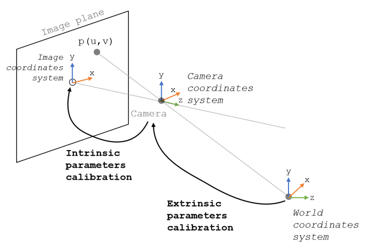

Pose e Transformação Coordenada Usando Marcadores AprilTag
Nesta atividade, vamos aprender sobre o conceito de pose e transformação coordenada. Vamos também aprender como usar marcadores AprilTag para estimar a distância e orientação de um objeto em relação a câmera. Depois, vamos usar essa informação para transformar a coordenada do objeto para a coordenada da câmera.
O que é Pose?
Pose é a posição e orientação de um objeto em relação a um sistema de coordenada. Sistema de coordenada é um conjunto de eixos que definem a posição e orientação de um objeto.
Na imagem abaixo, temos dois sistemas de coordenadas diferentes, um para a câmera e outro global (World). Cada um desses sistemas de coordenadas tem sua origem (ponto de referência) e seus eixos.

Em geral, quando utilizamos visão computacional, o sistema de coordenadas da câmera é o que chamamos de camera frame e o sistema de coordenadas global é o que chamamos de world frame.
Componentes da Pose
Posição
A posição de um objeto é geralmente representada por um vetor t⃗=[tx,ty,tz]t =[tx,ty,tz] que indica o deslocamento do objeto em relação a um sistema de coordenadas em cada um dos eixos.
Orientação - Euler Angles
A orientação de um objeto pode ser descrita através de ângulos de Euler. Estes são três ângulos que especificam a rotação do objeto em torno dos eixos XX, YY, e ZZ. Geralmente, rotações nos eiros XX, YY, e ZZ são chamadas de roll, pitch, e yaw, respectivamente, como mostrado na imagem abaixo.

Este método é intuitivo, mas pode sofrer de "gimbal lock". Gimbal lock é um problema que ocorre quando dois dos eixos de rotação estão alinhados. Neste caso, a rotação em torno de um eixo é perdida, gerando ambiguidade na orientação do objeto.
Orientação - Quaternion
Uma alternativa aos ângulos de Euler é o uso de quaternions. Um quaternion é uma estrutura matemática que evita o problema de gimbal lock e é computacionalmente mais eficiente para algumas operações. Ele é representado como q=w+xi+yj+zkq=w+xi+yj+zk.
Assista o vídeo abaixo para entender como funciona a representação de orientação usando quaternions.
Quaternions and 3d rotation, explained interactively
Marcadores AprilTag
Marcadores AprilTag são marcadores quadrados binários que são muito eficazes para determinar a pose. Eles são frequentemente usados em realidade aumentada e robótica para rastreamento de posição e orientação.
Como vimos na APS 4, é possível estimar a distância da camera até um objeto conhecido usando visão computacional. Marcadores como o AprilTag facilitam esse processo, pois possuem um padrão único que pode ser facilmente detectado e identificado.
Cada marcador AprilTag possui um ID único. O ID é um número inteiro que varia de 0 a 249.
Utilizando Marcadores AprilTag no Robô
Assim como a YOLOv8, a detecção de marcadores AprilTag também está instalada dentro do robô, mas se mantêm ligada, não sendo nescessário ligar ou desligar. Você pode se inscrever no tópico /tag_list, que publica mensagens do tipo robcomp_interfaces/TaginfoArray.
Novamente, agora vamos ver qual é a estrutura da mensagem robcomp_interfaces/TaginfoArray:
Taginfo[] tags
int32 id
geometry_msgs/Point center
float64 x
float64 y
float64 z
float32 distance
Como interpretar a saída
Para cada objeto detectado, dentro do parametro tags, você terá uma mensagem do tipo Taginfo, que contém as seguintes informações:
- id: ID do marcador
- center: coordenadas do centro do marcador na imagem
- distance: distância REAL [m] do marcador em relação a câmera
Prática 2
Agora vamos praticar o uso dos marcadores AprilTag e desenvolver um código para identificar os creepers (combinar ID com CORES).
Baseado no código do arquivo image_subscriber.py, crie um arquivo chamado creepers.py com uma classe chamada IdentificaCreeper, com um nó chamado identifica_creeper_node que se inscreva no tópico /tag_list e:
- Desenhe um círculo no centro do marcador.
- Segmenta as cores dos creepers (vermelho, verde e azul) e marca o centro de cada objeto segmentado. Para cada cor de objeto detectado deve ser armazenado em um dicionário com a cor do creeper e o centro do objeto.
- Combine todas as cores em uma lista de dicionários.
[{'color': 'red', 'center': (x1, y1)}, {'color': 'green', 'center': (x2, y2)}, ...] - Para cada marcador detectado, verifique o creeper mais próximo (pode utilizar distância horizontal, pois os marcadores são sempre verticais). Combine o dicionario do creeper com o ID e centro do marcador e salve em uma nova lista. Exemplo:
{'id': 23, 'tag_center': (x_tag, y_tag), 'color': 'red', 'center': (x_creeper, y_creeper)}. - Quando acaberem os marcadores, desenhe uma linha entre o centro do marcador e o centro do creeper mais próximo. Escreva o ID do marcador e a cor do creeper mais próximo acima da linha.
- No mundo real, coloque o robô no centro do quadrado desenhado na sala de aula e espalhe TODOS os creepers (vermelho, verde e azul) ao redor do robô.
- Grave um vídeo do seu robô girando 360 graus lentamente, enquanto identifica os creepers e desenha as linhas entre o marcador e cada creeper.
Observação
Essa é uma atividade complexa, então tente quebrar em partes menores e ir testando cada parte. Por exemplo, certifique-se que você consegue pegar as detecções do tópico e desenhar um círculo no centro de cada marcador. Depois, certifique-se que você consegue segmentar as cores e marcar o centro de cada objeto segmentado. E assim por diante.
Video
Grave um vídeo do seu robô realizando a atividade, de upload no YouTube e adicione o link no arquivo README.md do seu repositório.